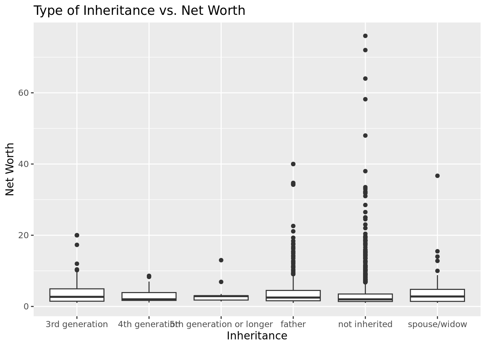
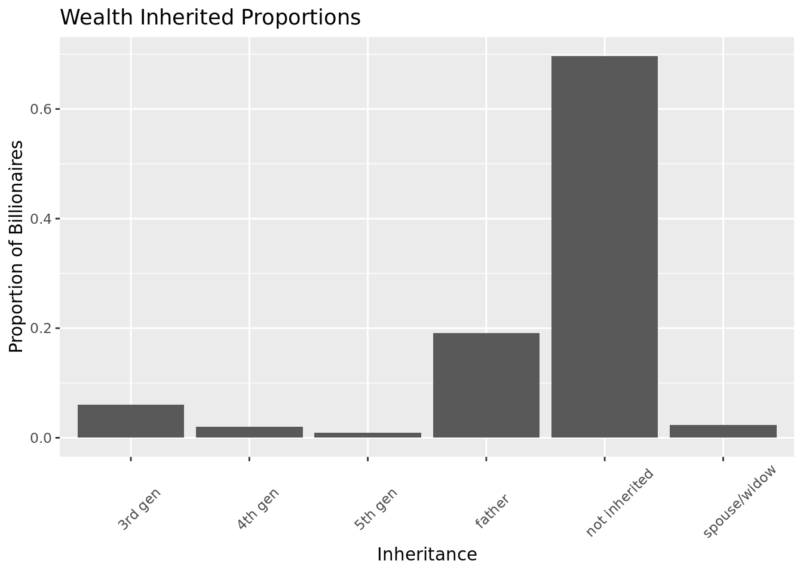

Billionaire Wealth
Report
Introduction and Data
To the average person, the modern billionaire is at once mysterious and completely scrutable. Few will ever come face to face with a billionaire, yet many can name the likes of Jeff Bezos and Bill Gates and a fact or two about each. While these billionaires sit on enormous wealth, 47% of the world lives on less than $6.85 per day, and 84% lives on less than $30 per day [1]. Moreover, the past two decades have seen a steep increase in global inequality as the world’s billionaires have captured an increasing proportion of global wealth [2]. Our realities of poverty among wealth and stark inequality thus incite questions about how world leaders should engage with billionaire wealth - was this wealth justly acquired? What are the ethics of wealth re-distribution? Wealth accumulation also invites larger philosophical questions of how society values or devalues certain activities over others.
Given these considerations, in this report, we investigate the potential sources of billionaire wealth. Specifically, we assess the question of how do wealth category, citizenship, and wealth type relate to billionaire net worths in 2014?
We hypothesize that financial wealth, European citizenship, and inheritance are related to billionaires having higher net worths. To begin with, our team hypothesizes that financial wealth relates to billionaires with higher net worths given that banking and finance have served the largest primary industries for up to 20.4% of the total billionaire population, according to the Billionaire Census 2022 [4]. Primary industries suggest where the billionaires devoted most of their time and by which they created most of their wealth. Second, we hypothesize that inheritance also associates with higher net worths of billionaires due to the link between increased inheritance flows and increased wealth distribution identified by several studies [5]. Finally, we associate European citizenship with higher net worths of billionaires as the third component of the hypothesis, as Europe’s billionaire wealth has been growing the fastest, up 22% year-over-year in 2021 [6].
Our data comes from the “billionaires” data set, which we obtained from the CORGIS Dataset Project. This data set was created by Ryan Whitcomb in 2016 and originally sourced from a report by Caroline Freund and Sarah Oliver of the Peterson Institute for International Economics. Freund and Oliver derived their data set from Forbes World’s Billionaires lists from 1996-2014 [3]. Forbes journalists drew from shareholder information, company financial statements, current exchange rates, and meetings with candidates to estimate billionaire net worths. From 1996-2010, the Forbes data included name, rank, citizenship, and net worth. Then, in 2011, Forbes added the source of wealth (company or sector).
Freund and Oliver supplemented the Forbes data with additional variables that describe the characteristics of billionaires and their businesses. The “billionaires” data set includes information on billionaires taken at three-time points: 1996, 2001, and 2014.
This report focuses on four variables: wealth, wealth type, wealth category, and citizenship. Following is a brief description of each variable of interest:
Wealth - Called “wealth.worth.in.billions” in the data set. A continuous numeric variable that describes the wealth in billions for each observation, where one observation is one billionaire at one time point.
Wealth type - Called “wealth.type” in the data set. A nominal categorical variable that describes the type of wealth. For billionaires in 2014, there are four wealth types: founder, inherited, privatized, and self-made.
Wealth category - Called “wealth.how.category” in the data set. A nominal categorical variable that describes the category of wealth. For billionaires in 2014, there are six wealth categories: energy, financial, new, non-traded, resource, and traded.
Citizenship - Called “location.citizenship” in the data set. A nominal categorical variable that describes the country of citizenship of the billionaire. In this report, we group citizenship into Europe and Not Europe.
The method by which information for this data set was collected priimarily raises two ethical concerns. First, when data collection involves human subjects, it is best practice to obtain the subjects’ consent. Although the Forbes journalists conducted interviews with subjects, it is unclear whether the journalists obtained the consent of all the billionaires that they collected data on. Moreover, it is unclear whether how Forbes obtained shareholder information and company financial statements. Second, this data set contains extensive personal identifying information about individuals, which may conflict for practices of de-identifying subjects and preserving subjects’ anonymity.
Literature Review
Freund, Caroline, and Sarah Oliver. “The origins of the superrich: the billionaire characteristics database.”Peterson Institute for International Economics Working Paper 16-1 (2016).
Summary:
This article directly addresses the origins of how billionaires get their wealth and what characteristics contributed to the rise of their wealth. The article specifies the age of billionaires as they reach the milestones of becoming millionaires and onwards. It looks into what economic sectors they work in and how much those sectors contributed to their wealth and compares the trends between Europe and America. They also compare personal factors like age and family inheritance.
How our research differs:
The research article analyzes and brings in new information on the impact of inheritance on accumulated wealth and net worth. We will specifically interrogate how significant of a role inheritance plays in wealth-building, which in an area that this article does not explicitly address.
Additional published credible article:
Sanandaji, Tino. “The international mobility of billionaires.” Small Business Economics 42 (2014): 329-338.
Summary:
This article uses Forbes Magazine’s list of billionaires and additional information to study the migration of billionaires and their sources of income that lead to them building their wealth and how their wealth interacts with the economy of the countries they live in and move to or from.
This study gives us better context on billionaires and the interactions of their wealth and movements that focuses on a couple of factors outside of the previous article and our own data set which could explain some of our own variables.
Methodology
Housekeeping
First, we load and glimpse our data:
Rows: 2,614
Columns: 22
$ name <chr> "Bill Gates", "Bill Gates", "Bill Gates", "…
$ rank <dbl> 1, 1, 1, 2, 2, 2, 3, 3, 3, 4, 4, 4, 5, 5, 5…
$ year <dbl> 1996, 2001, 2014, 1996, 2001, 2014, 1996, 2…
$ company.founded <dbl> 1975, 1975, 1975, 1962, 1962, 1990, 1896, 1…
$ company.name <chr> "Microsoft", "Microsoft", "Microsoft", "Ber…
$ company.relationship <chr> "founder", "founder", "founder", "founder",…
$ company.sector <chr> "Software", "Software", "Software", "Financ…
$ company.type <chr> "new", "new", "new", "new", "new", "privati…
$ demographics.age <dbl> 40, 45, 58, 65, 70, 74, 0, 48, 77, 68, 56, …
$ demographics.gender <chr> "male", "male", "male", "male", "male", "ma…
$ location.citizenship <chr> "United States", "United States", "United S…
$ `location.country code` <chr> "USA", "USA", "USA", "USA", "USA", "MEX", "…
$ location.gdp <dbl> 8.10e+12, 1.06e+13, 0.00e+00, 8.10e+12, 1.0…
$ location.region <chr> "North America", "North America", "North Am…
$ wealth.type <chr> "founder non-finance", "founder non-finance…
$ wealth.worth <dbl> 18.5, 58.7, 76.0, 15.0, 32.3, 72.0, 13.1, 3…
$ wealth.how.category <chr> "New Sectors", "New Sectors", "New Sectors"…
$ `wealth.how.from emerging` <lgl> TRUE, TRUE, TRUE, TRUE, TRUE, TRUE, TRUE, T…
$ wealth.how.industry <chr> "Technology-Computer", "Technology-Computer…
$ wealth.how.inherited <chr> "not inherited", "not inherited", "not inhe…
$ `wealth.how.was founder` <lgl> TRUE, TRUE, TRUE, TRUE, TRUE, TRUE, TRUE, T…
$ `wealth.how.was political` <lgl> TRUE, TRUE, TRUE, TRUE, TRUE, TRUE, TRUE, T…Next, we wrangle the data. 1. We coerce the variables to have valid names for our analysis.
- We filter the data to only include data from 2014.
- We create a new citizenship variable that describes whether or not the billionaire holds European citizenship.
- Next, we compute mean, median, and standard deviation of net worth for each potential outcome for our variables of interest.
# A tibble: 1 × 4
m_wealth me_wealth sd_wealth na.rm
<dbl> <dbl> <dbl> <lgl>
1 3.90 2.1 5.75 TRUE # A tibble: 18 × 5
wealth.how.industry m_industry me_industry sd_industry na.rm
<chr> <dbl> <dbl> <dbl> <lgl>
1 0 1.27 1.2 0.320 TRUE
2 Constrution 2.88 1.8 3.44 TRUE
3 Consumer 4.05 2.4 5.81 TRUE
4 Diversified financial 4.65 2.5 6.39 TRUE
5 Energy 3.91 2.1 4.24 TRUE
6 Hedge funds 3.89 2 4.57 TRUE
7 Media 4.72 2.45 8.10 TRUE
8 Mining and metals 3.54 1.7 4.00 TRUE
9 Money Management 3.13 2.05 2.94 TRUE
10 Non-consumer industrial 3.60 2 3.81 TRUE
11 Other 3.04 2.1 2.77 TRUE
12 Private equity/leveraged buyout 3.99 2.9 3.21 TRUE
13 Real Estate 3.02 2 3.70 TRUE
14 Retail, Restaurant 4.72 2.45 7.81 TRUE
15 Technology-Computer 5.23 2.2 9.20 TRUE
16 Technology-Medical 2.79 1.85 2.51 TRUE
17 Venture Capital 2.22 1.9 0.847 TRUE
18 <NA> 1.1 1.1 NA TRUE # A tibble: 8 × 5
wealth.how.category m_category me_category sd_category na.rm
<chr> <dbl> <dbl> <dbl> <lgl>
1 0 2.69 1.95 2.26 TRUE
2 energy 1.9 1.9 NA TRUE
3 Financial 3.56 2.2 4.49 TRUE
4 New Sectors 4.31 2 7.53 TRUE
5 Non-Traded Sectors 4.39 2.3 7.33 TRUE
6 Resource Related 3.99 2.1 4.39 TRUE
7 Traded Sectors 3.86 2.25 5.38 TRUE
8 <NA> 5 5 NA TRUE # A tibble: 2 × 5
citizenship_euro m_citizen me_citizen sd_citizen na.rm
<chr> <dbl> <dbl> <dbl> <lgl>
1 Europe 4.04 2.3 5.26 TRUE
2 Not Europe 3.85 2.1 5.94 TRUE # A tibble: 6 × 5
wealth.type m_inherited me_inherited sd_inherited na.rm
<chr> <dbl> <dbl> <dbl> <lgl>
1 executive 2.70 1.8 3.52 TRUE
2 founder non-finance 4.12 2.2 7.07 TRUE
3 inherited 4.41 2.6 5.50 TRUE
4 privatized and resources 4.01 2 6.33 TRUE
5 self-made finance 3.31 2 4.22 TRUE
6 <NA> 3.2 3.2 0.141 TRUE - Using the above data, we create box plots that visualize how each variable affects the distribution of billionaire net worths.


- We also created a box plot to visualize the difference in net worth between billionaires who did and did not inherit money.
- Additionally, for each of our variables of interest, we compute the proportion of billionaires associated with each outcome.
- Using the above data, we create pie chart visualizations.




To evaluate our research question and to test our hypothesis, we selected a linear regression methodology since it is a common method to model relationships between dependent variables (billionaire net worth) and one or more independent variables (financial wealth, European citizenship, and inheritance). Moreover, it allows us to quantify the strength and direction of the relationship between the independent variables and the dependent variable. If the results of the linear regression analysis show a significant relationship between financial wealth, European citizenship, and inheritance and higher net worths of billionaires, then the data would support the hypothesis.
Results
Single variable linear regression models
AIC = 10474.78
AIC = 10458.57
AIC = 10477.63
The second model, lin-reg-wealth-type, is the best fit model when looking at a single variable linear regression. This model indicates the relationship between net worth and wealth type and we know it is the best fit model for our data because the AIC value is the lowest of the 3 models. Looking at how the billionaire’s accumulated their wealth or what their citizenship is shows a less accurate picture of our data set, however the AIC values are very similar, so none of the models are significantly better or worse than another.
Two variable linear regression models
AIC = 10460.54
AIC = 10462.5
AIC = 10462.5
AIC = 10458.79
AIC = 10472.22
AIC = 10476.53
AIC = 10478.38
For our two variable linear regression models, the additive model “wealth.type + wealth.how.category” is the best fit for our data set. Its AIC is the lowest of the other additive model, as well as the two interaction models.
Three variable linear regression models
AIC = 10460.77
AIC = 10479.69
In the one variable linear regression models, the wealth type model had the lowest AIC, indicating that in a one variable linear regression, wealth type is the best fit for modeling billionaire wealth.
In the two variable linear regression models, the additive wealth type and citizenship model had the lowest AIC, indicating that in a two variable linear regression, an additive wealth type and citizenship model is the best fit for modeling billionaire wealth.
Similarly, in the three variable linear regression models, the additive model had the lowest AIC, indicating that in a three variable linear regression, an additive model is the best fit for modeling billionaire wealth.
Overall, our two and three variable linear regression models indicate that in modeling billionaire wealth, the additive model is a better fit than the interaction model. In all the two and three variable models, the additive models had lower AIC values than their corresponding interaction models, indicating better fit.
Conclusion
Throughout this project, we set out to determine how wealth category, citizenship, and wealth type relate to billionaire net worths in the year of 2014. We hypothesized that financial wealth, European citizenship, and inheritance are linked to billionaires possessing higher net worths.
To test our hypothesis, we began by grouping our data set by billionaires possessing citizenship in a European country and those with Non-European citizenship. We then calculated the summary statistics (mean, median, standard deviation) of the variable wealth.worth and then again but by filtering wealth.worth through different variables.
The mean of the billionaires net worth is 3.9 billion dollars. The median 2.1 billion dollars and the standard deviation 5.75 billion dollars. By grouping it by wealth.how.industry, we observed the drastic differences in total net worth, depending on the industry they accumulated wealth through. Technology (Computer) producing the richest billionaires with a mean of 5.23 billion dollars. With wealth.how.category, we notice that wealth was accumulated the most on average in Non-Traded Sectors. With the variable citizenship_euro, we came to the conclusion that on average the wealthier billionaires come from a European country, with their net worth coming in at 4.04 billion dollars, compared to the Non-Europeans at 3.85 billion dollars. Wealth.type indicates to us that those who inherited their wealth have on average a higher net worth. We then created box plots and pie charts to visually graph these results.
Lastly, we created linear regression models, both additive and interaction. The one variable wealth type linear regression model yielded the lowest AIC, indicating that wealth type is the best out of our variables of interest for modeling billionaire wealth. Considering that financial wealth accounted for a large proportion of the billionaires in the data set, our results provide evidence that financial wealth may have a relationship with billionaire status. It is important to note, however, that the AIC’s for all of these models were relatively similar and the difference may not be significant enough to consider one model as definitively better than the others. We find that one average, the wealthiest billionaires have derived wealth from inheritance. Therefore, our study provides evidence that inheritance is associated with a higher net worth. Our study also supports our hypothesis that European citizenship is associated with higher net worths.
Works Cited
Joe Hasell, Max Roser, Esteban Ortiz-Ospina and Pablo Arriagada (2022) - “Poverty”. Published online at OurWorldInData.org. Retrieved from: https://ourworldindata.org/poverty
Myers, J. (2021, December 10). These charts show the growing gap between the world’s richest and poorest. World Economic Forum. Retrieved March 29, 2023, from https://www.weforum.org/agenda/2021/12/global-income-inequality-gap-report-rich-poor/
Freund, C., & Oliver, S. (2016). (working paper). The Origins of the Superrich: The Billionaire Characteristics Database. Peterson Institute for Economics.
Goldberg, Robyn. “Billionaire Census.” Altrata, 1 Aug. 2022, https://altrata.com/reports/billionaire-census-2022.
Elinder, Mikael, et al. “Inheritance and Wealth Inequality: Evidence from Population Registers.” SSRN Electronic Journal, 2016, https://doi.org/10.2139/ssrn.2757949.
Avery, Koop “Mapped: The World’s Billionaire Population, by Country.” Visual Capitalist, 24 Sept. 2022, https://www.visualcapitalist.com/mapped-the-worlds-billionaire-population-by-country/